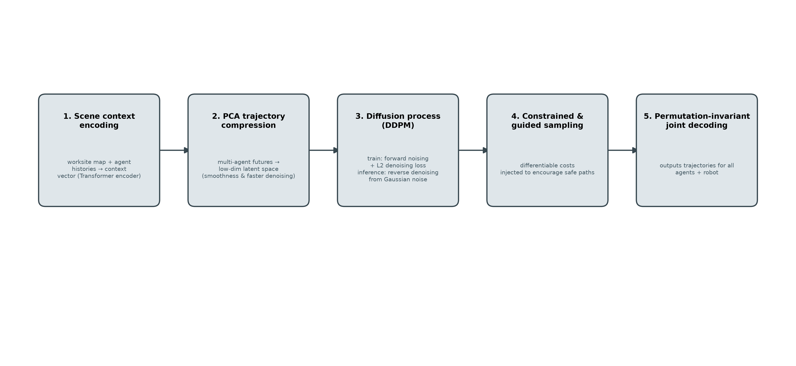
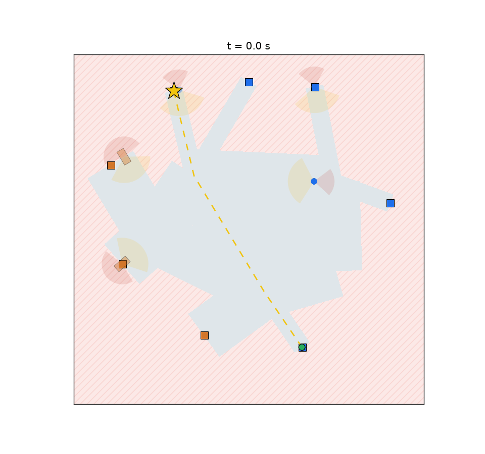
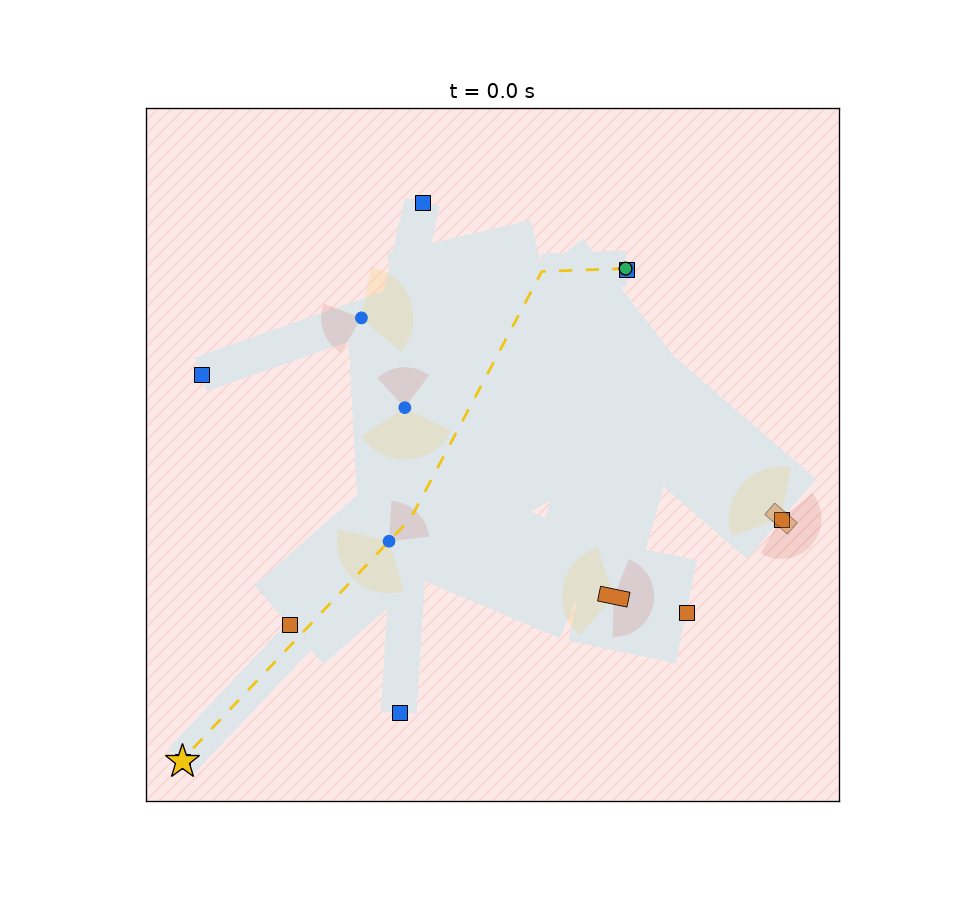

Social navigation · Trajectory prediction
Heterogeneous Trajectory Prediction and Social Navigation for Construction-Site Robots
A closed-loop construction-site simulator and a joint diffusion predictor–planner, in which one robot crosses a site of workers and heavy equipment that do not share its physics, its field of view, or its obligations.
The problem
Most social-navigation benchmarks assume a crowd of interchangeable pedestrians. A construction site is not that. People and heavy equipment share the same ground under different physics and different obligations: a worker can stop and turn on the spot, a loaded vehicle has a multi-metre turning circle and cannot stop quickly, and no amount of politeness on the robot's side makes a reversing loader yield.
The asymmetry is the interesting part. Humans are assumed to yield to vehicles, so a site vehicle keeps its path and the robot must satisfy the safety constraint alone. The task is therefore not crowd avoidance in the abstract, but a robot that moves between workstations while reading who has right of way, who cannot see it, and who is not going to move at all.

Environment
Sites are generated from a seed, so every result is reproducible and every failure has an address. A site is a graph: neutral junctions joined by walkable corridors, with workstations hanging off the graph as degree-1 leaves. Human corridors are narrow (3 m at the 60 m reference scale), vehicle corridors wide (9 m), and mesh corridors shared. Agents are sampled so that each of the 5–19 of them gets its own start station; when two share a destination they take berths either side of its spoke rather than stacking on one point.
Each agent cycles working → moving → working between two stations of its own kind. Humans are unicycles (1.4 m/s nominal, 120°/s turn limit); vehicles are bicycles with ω = v·tan δ / L steering (1.0 m/s nominal, 30° steering, 4.3 m turning circle). The vehicle is deliberately slower than the person — the constraint is geometry, not speed.
Every entity, including the robot, carries a collision radius D_S and a safety radius D_C (0.4 / 1.2 m for a human, 1.5 / 3.0 m for a vehicle). Humans have a 60° half-angle field of view and a rear blindspot cone; the robot only enters a human's avoidance constraints while it is inside that human's field of view, which is what produces the one-sided encounters a real site has.
Movement is pure pursuit along the route, projected through ORCA — optimal reciprocal collision avoidance. Reciprocity is where the site's rules live: 5 % of the recovery goes to a vehicle and 95 % to the human, like kinds split evenly, and a stationary neighbour absorbs none of it, so a moving agent takes the whole correction rather than driving through someone working. The robot takes the human side of every split.
Three details make ORCA survive nonholonomic bodies at a 0.5 s timestep: a two-phase update (snapshot all poses before commanding anyone, or reciprocity breaks), velocities that steering cannot realise within a step are scaled down instead of driven at full speed, and a coarse-step margin keeps the combined radius above one step of human travel. A contact fallback adds an exponential social force only inside the body-radius band and resolves residual overlap positionally — with the robot deliberately excluded, since robot-to-person contact is the quantity under evaluation and suppressing it would make the metric vacuous.
All lengths and speeds derive from the arena size, so the same code drives a 60 m site and a 3 m miniature that fits the Robotarium's physical arena.
Method
The predictor is joint over N = M + 1 entities — every agent and the robot — and scale-free, since positions are normalised by arena size. That single representation is what lets prediction and planning share information instead of handing trajectories across a boundary.

Three predictors sit behind one interface:
Constant velocity
The baseline, and the prior the learned models are built on.
Reduced Trajectron++
Joint encoder plus a discrete conditional VAE over interaction modes, trained with reconstruction and categorical KL.
MotionDiffuser-style diffusion
GRU history encoder (history, last position, velocity, kind and state embeddings) feeding a transformer block over entity tokens, so agents attend to one another; DDIM sampling returns K multimodal futures.
Three choices matter on a CPU budget: x₀-prediction instead of noise-prediction, a cosine noise schedule so the last step really is pure noise, and diffusing the residual over the constant-velocity prior, so capacity is spent on interaction-driven corrections rather than on relearning smooth motion.
The planner couples to the predictor at sampling time. In its safety_diffusion mode the sampler is conditioned on the robot's intended route: the joint sample is inpainted so the robot's row is pinned, the agents are generated conditioned on that row, and the robot's rows are projected onto the hard-constraint safe set inside reverse diffusion. A per-class D_S/D_C filter runs afterwards. Safety is thus a property of the sampled plan, not a post-hoc patch. An oracle variant replaces the predictor with perfect future knowledge, giving an upper bound on what the same controller achieves if prediction were free.
Results
Five planners, checkpoint-free, on out-of-sample seeds 100–115 (M = 7, two goals per trial, 16 trials each). Every planner reaches both goals, so the differences are in safety and cost J = T_travel + λ₁∫max(0, −h_C)dt + λ₂T_freeze.
| Planner | Prediction | Success | Contact events | Steps in contact | J | Travel (s) | Intrusion |
|---|---|---|---|---|---|---|---|
| Pursuit, no avoidance | none | 100% | 11 | 24 | 90.58 | 82.2 | 8.36 |
| ORCA | none | 100% | 1 | 2 | 93.13 | 85.1 | 7.99 |
| ORCA + constant-velocity forecast | CV | 100% | 1 | 2 | 91.67 | 85.2 | 6.42 |
| Fixed-radius + perfect forecast | perfect | 100% | 0 | 0 | 90.20 | 86.1 | 4.11 |
| MPC + perfect forecast | perfect | 100% | 2 | 2 | 88.58 | 86.4 | 1.97 |
Contact events count one incident per agent per episode — an agent held inside the hard radius for ten steps is one event, not ten; “steps” counts 0.5 s control steps in which any agent was inside its D_S.

joint (oracle) is the MPC + perfect-forecast row above. The best J is not the safest row: cost trades travel time against intrusion, exactly as the objective intends.Three findings are worth stating plainly.
The crowd absorbs the robot. Doing nothing at all yields 11 contact events; doing what every other agent does — running the same ORCA policy — yields 1, for about 3 s of extra travel. A robot that behaves like a well-mannered peer is already most of the way there, and that is the baseline any learned planner has to beat.
Prediction buys distance, not non-collision. ORCA with a constant-velocity forecast does not change the contact count at all (1 → 1), yet cuts the intrusion integral from 7.99 to 6.42 and J from 93.13 to 91.67. Having a future available to the controller changes “does not hit” into “keeps its distance”.
The residual contacts are geometry, not policy. The perfect-knowledge row still records two events, and both are workers walking into the robot from outside their own field of view (bearings +122° and +140°, against a 60° half-angle) while the robot was stopped or crawling. The barrier h_S = ‖p_R − p_m‖² − D_S² is symmetric but the actuator is not: the planner can decline to enter someone's space, it cannot step out of it within 0.5 s. Penetration in those two episodes was 0.6 cm and 2.7 cm.
Predictor benchmark — preliminary
Open-loop ADE/FDE on held-out scenes, best-of-K, M = 7:
| Model | ADE H=1 | ADE H=4 | ADE H=16 | FDE H=16 |
|---|---|---|---|---|
| Constant velocity | 0.15 | 0.48 | 2.71 | 5.97 |
| Trajectron++ (reduced) | 0.40 | 0.78 | 2.68 | 5.30 |
| Diffusion (K=6) | 0.58 | 0.62 | 2.28 | 4.59 |
Constant velocity wins at short horizons because the motion is smooth at dt = 0.5 s; the joint models win at long horizons and as the crowd grows, where interaction structure is all there is to model.
On the Robotarium
The site maps into the Robotarium arena under a single uniform scale, with the robot and all agents instantiated as physical-style unicycle robots driven by the same route-following and ORCA controllers. Two approximations are documented rather than hidden: the Robotarium simulates only unicycles, so bicycles are reduced to their curvature-equivalent turn rate, and its robots are ~0.11 m in diameter, so agents' collision radii are floored at the physical robot's size or the simulator's own checks fire constantly.
Each demo seed is chosen by ranking candidate seeds on a cheap site-frame trial (goal reached, no collisions, closest encounter of the requested kind) and confirming the first survivor on the Robotarium — 24 candidates by default. All three demos below reach the goal with zero robots_too_close, zero out-of-boundary and zero actuator-limit violations reported by the simulator.



Reproducing it
git clone https://github.com/noahleegithub/construction-site-social-nav
cd construction-site-social-nav
python -m venv .venv && .venv/bin/pip install -e ".[dev,ml]"
.venv/bin/pip install "git+https://github.com/robotarium/robotarium_python_simulator"
# one closed-loop trial, with animation
python -m construction_nav trial --seed 0 --agents 7 --planner joint --animate
# the planner table above
python scripts/evaluate_planners.py --baselines-only --agents 7 --trials 16
# Robotarium social-navigation demos
python -m construction_nav robotarium --agents 5 --planner joint --seeds 24The package runs without PyTorch for everything except the learned predictors, and the test suite covers dynamics integration, scene invariants, scale invariance, the metric closed forms, and an end-to-end Robotarium smoke test.
Limitations
The site frame is simulation, and the hardware validation is a miniature arena with scaled agents — the right next step is a physical site robot with real perception, not a larger simulation. Vehicle dynamics are kinematic (bicycle model) rather than dynamic, so momentum and load effects are out of scope. And the predictor numbers above are, as noted, pending retraining against the current agent policy.